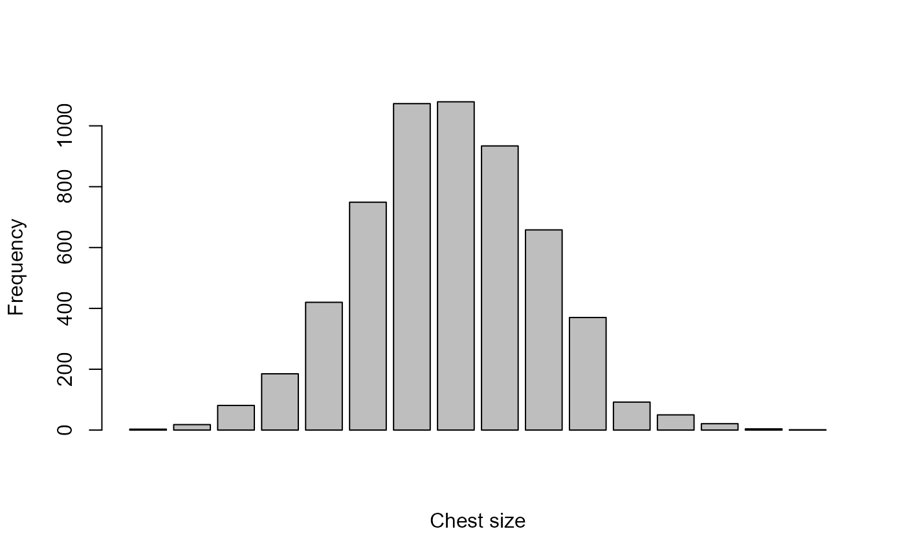

Chest measurements of Scottish Militiamen
ChestSizes.RdQuetelet's data on chest measurements of 5738 Scottish Militiamen. Quetelet (1846) used this data as a demonstration of the normal distribution of physical characteristics and the concept of l'homme moyen.
Stigler (1986) compared this table to the original 1817 source, and discovered some transcription
errors, which he corrected (p. 208). These data are given separately in
ChestStigler.
Gallagher (2020) used these data sets to re-consider the question of normality in these distributions.
Usage
data(ChestSizes)Format
A data frame with 16 observations on the following 2 variables. Total count=5738.
chestChest size (in inches)
countNumber of soldiers with this chest size
Source
Velleman, P. F. and Hoaglin, D. C. (1981).
Applications, Basics, and Computing of Exploratory Data Analysis. Belmont. CA: Wadsworth.
Retrieved from Statlib: https://www.stat.cmu.edu/StatDat/Datafiles/MilitiamenChests.html
References
A. Quetelet, Lettres a S.A.R. le Duc Regnant de Saxe-Cobourg et Gotha, sur la Theorie des Probabilites, Appliquee aux Sciences Morales et Politiques. Brussels: M. Hayes, 1846, p. 400.
Eugene D. Gallagher (2020). Was Quetelet's Average Man Normal?, The American Statistician, 74:3, 301-306, DOI: 10.1080/00031305.2019.1706635
Stephen M. Stigler (1986). The History of Statistics: The Measurement of Uncertainty before 1900. Cambridge, MA: Harvard University Press, 1986, p. 208.
Examples
data(ChestSizes)
# frequency polygon
plot(ChestSizes, type='b')
# barplot
barplot(ChestSizes[,2], ylab="Frequency", xlab="Chest size")

# calculate expected frequencies under normality, chest ~ N(xbar, std)
n_obs <- sum(ChestSizes$count)
xbar <- with(ChestSizes, weighted.mean(chest, count))
std <- with(ChestSizes, sd(rep(chest, count)))
expected <-
with(ChestSizes, diff(pnorm(c(32, chest) + .5, xbar, std)) * sum(count))